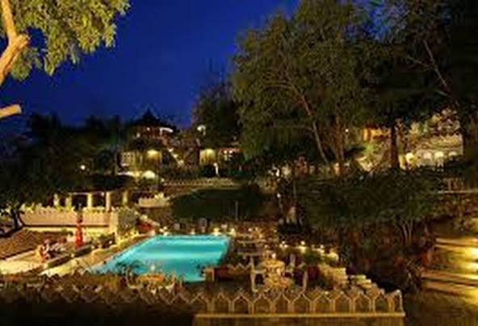

THE AODHI

This Indo-Islamic hotel with elegant domes and arched windows is 1.9 km from the 15th-century hilltop fort of Kumbhalgarh and 6 km from the Parshuram Mahadev Temple.
The polished, brightly coloured rooms feature free Wi-Fi, flat-screen TVs, minibars/fridges and tea and coffeemaking facilities; some also include bay windows. Room service is available.
There's a refined restaurant with terrace seating. Other amenities include a lounge bar, an outdoor pool and free parking.
| RATINGS |
| HOTEL 3 STAR |
| LOCATION-3.5 |
| FACILITIES-3.3 |
| FOOD-3.8 |
| CLEANLINESS-4.7 |
| ROOMS-4.5 |
| HOSPITALITY-4.4 |
HOTEL AMINITIES
| ROOM SERVICE |
| CHILDREN PLAY AREA |
| LAUNDRY |
| PARKING FACILITY |
| SIGHTSEEING |
| BONFIRE |
| AIR CONDITIONER |
| MINERAL WATER |
| BALCONY/SIT OUT |
|
ROOMS
| FAMILY ROOMS |
| CLASSIC ROOMS |
| PREMIUM ROOMS |
| SUPERIOR ROOMS |